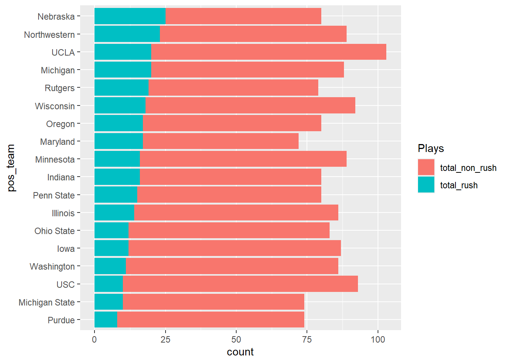

Teams run on third and six about a quarter of the time
Author
Marwa Barakat
Published
October 16, 2024
It’s third down, and a team has six yards left to first down. What do teams do? Do they run, or do they throw a pass?
When Maryland decided to run the ball during that play last season, losing a yard and eventually losing the game, people wondered where this decision came from.
After analyzing football data from 2019 to the present, Maryland seems to run on these plays a similar amount to other teams.
Here is how I analyzed that data:
Code
library(tidyverse)
Warning: package 'tidyverse' was built under R version 4.3.3
Warning: package 'ggplot2' was built under R version 4.3.3
── Attaching core tidyverse packages ──────────────────────── tidyverse 2.0.0 ──
✔ dplyr 1.1.4 ✔ readr 2.1.5
✔ forcats 1.0.0 ✔ stringr 1.5.1
✔ ggplot2 3.5.1 ✔ tibble 3.2.1
✔ lubridate 1.9.3 ✔ tidyr 1.3.1
✔ purrr 1.0.2
── Conflicts ────────────────────────────────────────── tidyverse_conflicts() ──
✖ dplyr::filter() masks stats::filter()
✖ dplyr::lag() masks stats::lag()
ℹ Use the conflicted package (<http://conflicted.r-lib.org/>) to force all conflicts to become errors
How many times has any team run on 3rd and 6 each year we have data for? In 2023, teams ran the most on these plays (822 times) and in 2020, teams ran only 301 times
# A tibble: 280 × 2
pos_team total
<chr> <int>
1 Navy 60
2 Army 51
3 Air Force 42
4 Georgia Southern 35
5 New Mexico 32
6 Ole Miss 31
7 Kent State 30
8 Baylor 29
9 Georgia Tech 29
10 Louisiana 29
# ℹ 270 more rows
On third and six plays, Maryland runs the ball about 24 percent of the time, a very slight increase from the total average of 22%.
# A tibble: 2 × 5
year total total_rush pct_rush avg_yards
<int> <int> <dbl> <dbl> <dbl>
1 2023 8 5 0.625 3.25
2 2024 9 1 0.111 5.11
Maryland is running less on third and six this season compared to the same period last season. The one time Maryland did run it this season, it gained about 5 yards, which is greater than the average of the five runs in this same situation from last season.
When looking at the Big Ten, teams run from about 11% of the time to about 31% of the time. Maryland falls closer to the higher end of those percentages.
Code
library(ggplot2)library(dplyr)# Summarize total "total_rush" for each teamrush_totals <- bigten %>%filter(Plays =="total_rush") %>%group_by(pos_team) %>%summarise(total_rush =sum(Number))# Reorder 'pos_team' based on the total 'total_rush'bigten <- bigten %>%left_join(rush_totals, by ="pos_team") %>%mutate(pos_team =reorder(pos_team, total_rush))# Plot the stacked bar chartggplot(bigten) +geom_bar(aes(x = pos_team, weight = Number, fill = Plays)) +coord_flip()

NOTE: I had created a stacked bar chart that looked fine, but I wanted to arrange the bars by the total_rush to show which teams are running more at third and six. However, I could only arrange it from most to least overall totals. So, I had to use the help of ChatGPT to figure out the code to arrange it this way.
In the Big Ten, when looking at totals, Maryland falls around the middle of the road when it comes to the number of running plays at third and six. No team in the conference ran it more than 25 times from 2019 to the present.
Although Maryland fans questioned the decision to run during last year’s homecoming game, it was not an unusual decision for the team to make. When it comes to third and six plays, Maryland has performed very similar to the average of teams across the country.
It wasn’t an unusual call but rather just an unlucky moment.